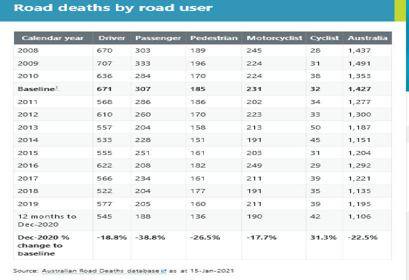

I plan to develop a system to detect driver consciousness in order to reduce the number of deaths due to drowsiness. Saving lives and helping others are always on the top list of my passion. After building this system successfully, I have also built up my Python programing skill, applying dataset from Data Science skill which will help me a lot in developing my experience for my CV to make a step closer to my target career.
According to www.who.int (World Heath Organization), 1.35 million people die each year on the world’s road.

According to readsafely.gov.au statistic, there were 1473 people who died from road accidents in Australia. Good news is that the general number of read deaths number is decreasing over the past years. In 2019, the recorded number of deaths from road accidents was down to 1195 cases. Among that, 733 (accounts for about 61%) people who was identified to be drivers and passengers in car accidents. There are many causes of the car accidents, and drowsy is one of thing.
According to United States Department of Transportation, in 2017 drowsiness took away 795 deaths in United States. According to www.abc.net.au, driving while sleep-deprived has reached worrying levels in Australia, with 20 per cent of respondents to a new survey admitting they have fallen asleep at the wheel at least once. Of those, 5 per cent said they had a car accident in the past year because they dozed off or were too tired.
To prevent the drowsy issue while driving, a system that can wake drivers up while driving in case they are sleepy is necessary. The objective of this project is to build a drowsiness detection system that will detect that a person’s eyes are closed for a few seconds. This system will alert the driver when drowsiness is detected. If this system can be installed successfully, many lives will be saved.
We will be applying OpenCV to capture the images using webcam and feed them into a Deep Learning model to classify the driver’s eyes state of ‘Open’ or ‘Closed’. Deep Learning is a subfield of machine learning using algorithms (structures and functions) of the brain. Here, we will apply Convolutional Neural Networks (CNN) for the classifying job.
OpenCV (Open Source Computer Vision Library) is an open source computer vision and machine learning software library. OpenCV was built to provide a common infrastructure for computer vision applications and to accelerate the use of machine perception in the commercial products.
A convolutional neural network (CNN) is a class of deep neural networks and commonly used for analysing visual images. Convolutional neural networks are composed of multiple layers of artificial neurons. A CNN mainly consists of an input layer, an output layer and a hidden layer.
The system will go through 5 main steps to function properly:
Take picture of the driver’s state using the system camera or connected camera installed in the car/vehicle.
Non-rigid movement of the face can cause confusion for the system to analyse the target state. Region of Interest detection technique will reply on universal expressive face images in its library to get the general idea of the driver mental state bases on their face expression.
For more specific, there are six basic expressions (happiness, sadness, surprise, anger, disgust, fear) according to Darwin.. Facial expressions cause structural changes in the regions of facial landmarks (eyebrows, eyes, nose, and mouth). If we can not detect the face expression then it can be harder to know how the circumstances of the target person.
We also need to first convert the image into grayscale so that the OpenCV algorithm can perform detection.
From getting the general detection of the face, the system then try to locate the eyes (left eye and right eye separately) from the whole face by extracting the boundary box of the eye then write code to pull out the eye from the frame image.
Now the system will try to classify the eyes circumstance.
To decide whether the eyes are open or closed, we have to compare the eyes states in the picture with the states in the system dataset. The dataset will need to be created.
For more specific, a script that captures eyes from a camera and stores in our local disk will be written. We then classify and put label on them according to their ‘Open’ or ‘Closed’ state accordingly. The data was manually cleaned by removing the unwanted images which were not necessary for building the model.
We will have to create an evaluation scoring scale based on how long the eyes have been closed. For example, if two eyes are closed the score will increase, and if two eyes are open then the score will decrease. The system will display the result on the screen.
At the same time, the system will decide if the score is lower than a specific level, then it means the driver has been drowsy. This, then, will trigger the alarm in the vehicle to produce alarm sound to wake the driver up.
For example, if the score drops to 10 (score at 10 is in default to be DROWSY status), then the system will trigger the alarm in the car to produce BEEP sound many times until the eyes movement/status change and the score is boosted up to AWAKE condition
If the project be successfully developed, the number of car accidents due to drowsiness will drop down and many lives might be saved. This can also save a lot of money for the countries that use this system because having less accidents means spending less on hospital bills.
Wood, P 2017, Alarming' number of drowsy drivers on Australia's roads, sleep study finds, ABC News, viewed 15 Mar, 2021, https://www.abc.net.au/news/2017-02-08/sleep-study-finds-alarming-number-of-dozy-drivers-on-our-roads/8250780
Drowsy Driving, National Highway Traffic Safety Administration, viewed 15 Mar, 2021, https://www.nhtsa.gov/risky-driving/drowsy-driving
Road Safety, World Health Organisation, viewed 15 Mar, 2021, https://www.who.int/data/gho/data/themes/road-safety